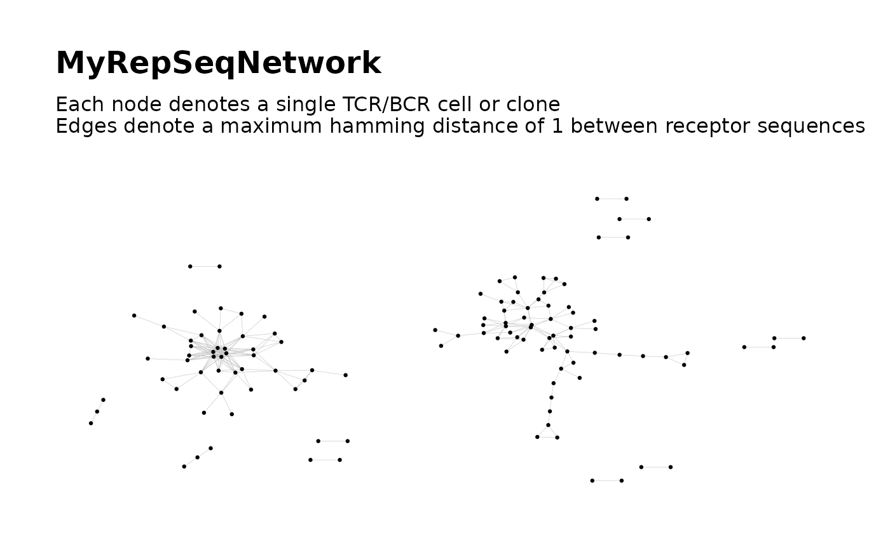

Get Coordinate Layout From Graph Plot
extractLayout.RdGiven a ggraph plot, extract the coordinate layout of
the graph nodes as a two-column matrix.
Arguments
- plot
An object of class
ggraph.
Value
A matrix with two columns and one row per network node. Each row contains the Cartesian coordinates of the corresponding node.
References
Hai Yang, Jason Cham, Brian Neal, Zenghua Fan, Tao He and Li Zhang. (2023). NAIR: Network Analysis of Immune Repertoire. Frontiers in Immunology, vol. 14. doi: 10.3389/fimmu.2023.1181825
Author
Brian Neal (Brian.Neal@ucsf.edu)
Examples
set.seed(42)
toy_data <- simulateToyData()
net <- buildRepSeqNetwork(toy_data, "CloneSeq", print_plots = TRUE)

my_layout <- extractLayout(net$plots[[1]])
# same as `graph_layout` element in the plot list
all.equal(my_layout, net$plots$graph_layout, check.attributes = FALSE)
#> [1] TRUE